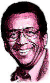
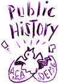
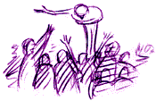

This is an archived copy of History Matters, provided by the Roy Rosenzweig Center for History and New Media. To explore this content in a new interface, visit Who Built America?.


Jim Horton is Benjamin Banneker Professor of American Studies and History, George Washington University and the Director of the African-American Communities Project at the Smithsonian’s National Museum of American History. He is the author of numerous articles and five books, including, Free People of Color: Inside the African-American Community, (1993), and In Hope of Liberty: Culture, Protest, and Community Among Northern Free Blacks, 1790–1806, which was co-authored with Lois E. Horton and published in 1997. He has been extremely active as a public historian, serving as adviser to numerous museums and film projects and as chair of National Park Service Advisory Board. He has also had a distinguished teaching career over the past twenty-five years; in 1994, he received the Trachtenberg Distinguished Teaching Award from George Washington University; in 1996, he was named CASE Professor of the Year for the District of Columbia by the Carnegie Foundation. He is interviewed here by Roy Rosenzweig, Director of the Center for History and New Media at George Mason University.
|
|
 |
I enjoy teaching Public History to graduate students because many of them have never considered the prospect of practicing history outside the academy. Others come with a public history background and embrace the subject in the university as advocates and proselytizers. Public history reminds me of why I decided to become a historian in the first place. It gives me the opportunity to deal with history as a practical as well as an intellectual enterprise, far too important to be penned up inside the academy. It gives me a platform to talk about the responsibilities that we historians have to provide a historical context for the debates of contemporary society—a responsibility too few of us take seriously. |
6. What about the U.S. Survey Course? When have you taught that? What are the appealing and less appealing features of that course?
I started teaching at the University of Michigan in 1973, but until 1976 I had never taught the U.S. survey course. I have always thought it appropriate that I taught it for my first time in the Bicentennial year, as many of the students taking that course told me that they had never had a black history professor before. I suppose that gave me extra incentive to teach a course that they might remember. It’s themes were informed by social history research, and I placed far more emphasis on the role of race, gender and class than was usual at Michigan in those years. At one point, one of my senior colleagues took me aside to discuss my “departure from standard American history.” He was not pleased, but he did have to admit that the 200 plus students seemed to find the course interesting. I have taught the survey off and on for two decades at George Washington University and have always enjoyed the challenge of keeping the large and diverse numbers of students who are likely to take the survey course awake during class. The most rewarding moments often come years later, when that one student who routinely came late to class, who never took part in discussions, and seemed to barely tolerate the lectures, suddenly appears to testify to the life-transforming qualities of the course. One such incident makes up for the hundreds of students who remain almost anonymous.
The most frustrating part of teaching the survey is the realization that complex issues must be simplified to fit within the constraints of limited time and narrow undergraduate student knowledge. Although undergraduate students are fun to teach because their learning process is so obvious and observable, I find graduate students exciting to teach because they are more like colleagues. I view my graduate students as an important support group for exchanging ideas and testing interpretations.
7. What are the biggest themes that you try to convey in the survey course or in surveys of social history and African-American history? What are the organizing principles of your survey course?
I think that it is important for students to get the sense that people make history; it is not simply a matter of inevitable events or irresistible forces. The decisions that human beings make that move society in one or another direction are made within the context of a system of beliefs and as a consequence of experience. To understand these decisions and even the accidents of history which may have significant and completely unintended consequences, students must become aware of another time, very different from their own in may ways. Attempting to do that is a valuable exercise because it facilitates the understanding that people may be reasonable, even though they do things with which we disagree. I try to remind my students, many of whom are from the Middle-Atlantic region, that the whole world is not Upper Montclair, New Jersey. Reasonable people at different times and in different places, with different frames of reference, often see different realities and thus make different decisions. The challenge of history for my students, is attempting to see and appreciate, although not necessarily to agree with, realities distant from their own. One of the ways I try to do this is to expose students to the primary documents from the historical period under consideration. We read pensions records from the Revolution to understand the lives and choices open to ordinary people at the time. We read nineteenth-century newspapers to understand what people in small and large communities knew and what information they used to make their decisions. We debate issues from varying points of view using the arguments and the evidence used to support those arguments drawn from primary records in order to better understand the competing angles of vision from which Americans viewed contested issues. This is an organizing principle of all my courses, I never ask students to simply memorize the “facts” of history. Instead, I want them to ask questions about the people and events of history and then to question the significance of the answers they get from the course material. This is what many of my students smilingly refer to as the “who cares” or the “so what” question.
8. What are your favorite primary documents to use in the survey course?
For my social history course and my U.S. survey which covers up to the Civil War, I like to use the Revolutionary War pensions records. I have my students read the records of a soldier and then tell the story of the war-era experience from his point of view. I also use eighteenth- and nineteenth-century newspapers to help students get a feel for the period that we are studying and to understand that people at the time often had very different information available to them depending on the newspaper that they read. This is especially helpful to have students understand the differing views on abolition or the causes of the Civil War, for example.
|
9. What are the most effective assignments that you use in the US Survey course? My Revolutionary War pension record assignment is the most popular assignment since students learn not only about the war years but about the soldier and his relationships before and after the war. They also like the fact that they get a chance to read and interpret documents most of which have not been read in almost two centuries. I explain that each of them is probably the world’s living expert in the life the veteran whom they study. Here’s the actual assignment: |
|
Revolutionary War Pension Records Assignment After the War of 1812 Congress passed a law allowing all those who suffered disabilities as a result of military service during the Revolutionary War to apply for a pension. Widows who had lost their husbands as a result of the war could also apply for assistance. The records of those who made application to the federal government are available to researchers at the National Archives in room 400. Researchers at the National Archives must use the Pennsylvania Ave. entrance. Your assignment is to research the pension records of two Revolutionary War veterans and write a short essay (5–7 pages) entitled “The Impact of the Revolution on The Life of War Veterans.” This essay need not be limited to post-war information but may be based on any information found in the pensions. It is important to use your class readings as context for your essay and to include any relevant information. Did you find anything in the class readings that was relevant to the experience of your veteran? Hints: Pay greater attention to files that are large since they are most likely to have enough information to support your essay. Frequently widows applications are best because they are contain written testimony from friends and family who verify the marriage. |
I also give one other assignment that is very popular. I break the class up into regional groups, New England, Mid-Atlantic and Southern. Each group then reads newspapers from their respective region for news coverage of the John Brown raid on Harpers Ferry. Students debate the raid using the information that they find in their regional newspapers. It quickly becomes clear that the newspaper accounts differ considerably. We then discuss the ways that newspaper accounts shaped public opinion and how the newspaper accounts were shaped by regional attitudes especially those concerning slavery. The accounts of the raid and other items in the newspaper, including advertisements and local stories, help students to understand the sectional differences and assumptions that helped to bring on the Civil War.
10. What are your most important goals in teaching the survey course?
In addition to the issues we have already discussed, I think that it is most important to get students to think about the diverse nature of the people who have created American culture and our national history. By this, I mean more than simply viewing America as a pluralistic society in which discrete cultures and societies co-existed. Each of us who carries within us the heritage of America also carries varying admixtures of the many cultures that have created America. To differing degrees, depending on our personal regional, economic, cultural, and social influences, we all carry the cultural heritages of Europeans, Africans, Native Americans, and Asians, with all the cultural complexities of these peoples. I want my students to consider how these heritages and the uneven distribution of social, political, and economic power have shaped the policies and many of the values of American society.
11. What do you most want students to take away from an introductory U.S. survey course that you teach?
I want students to take away a sense of their place in American history and a realization that it is important to consider the issues of today’s society in a historical context. And I want them to understand that individuals, working alone or in groups, have exerted significant influence over events in history and can in contemporary America. In this I hope to counter the cynical notion that I find in too many of my students, that nothing they do will make a difference. I find this attitude particularly troubling. If those who are among the most privileged, educated, and potentially powerful of Americans cannot influence their nation, the ideal of democracy needs serious reconsideration.
12. How has teaching the survey course changed in the two decades since you started offering it at Michigan? Has your teaching of that course been affected by the changing composition of the student body or by the changing position of the US in the world? Do we need to rethink the way we teach a specifically national history in an increasingly multicultural and global society?
My teaching has changed as I have become aware of new historical questions, new analyses and new data, some of which comes from my own research. My students today have a different frame of reference and thus my methods have changed to be more effective with the present generation. I am currently trying to incorporate more computer assignments and the use of the Web into my teaching. Next year I will attempt to use Ed Ayers' “Valley of the Shadow” computerized project as a part of the course and also computerized data that I have developed as a part of my African-American Communities Project at the Smithsonian.
We surely do need to rethink the possibilities of the global society in our approach to teaching U.S. history. One of the more experimental projects I will introduce next year is an international conversation on selected historical issues between my class and an American history class at the University of Hamburg in Germany. This experiment is being arranged with a class taught by Norbert Finzsch with whom I have co-authored a survey of African-American history to be published in Germany. We will use some of the data from our book to guide our class discussion. American students will benefit from the reactions, questions and interpretations of non-Americans and I think that those abroad studying American history will learn much about our society from our students. I hope to expand this experiment to other foreign university courses in coming years.
13. What is your most memorable or rewarding teaching experience?
There have been many memorable and rewarding experiences. One was the first course that I taught at GW in 1977. Black history had not been offered in some years. Both it and I were relatively unknown to the students. When I taught it that fall semester there were only two students who took it, a white man and a black woman. I did very little lecturing but our conversations were detailed and instructive for all of us. A few weeks into the course we started getting a growing number of visitors so that by mid-term time there were several students sitting in. The two official students also became evangelists for the subject. At one point they came to another course I was teaching and acted as resource persons on the issue of race in history. I think they really enjoyed their role and I found the entire experience inspiring. By the way, the second half of the course drew almost thirty students, in part because of the work of the original two.
One other experience that I will never forget was my Fulbright teaching year in Germany at the University of Munich. All the classes there were memorable, but there was one particularly wonderful experience. About half way through the school year university students all over the country went on strike to protest cuts in education. In an act of sarcasm, they announced that in order to help the government save money on education, they would attend school 24 hours a day so as to make most efficient use of university facilities. I taught a lecture class in nineteenth-century U.S. social history at 1:00 AM. On the night of the class, the room was full to overflowing with students and townspeople sitting on the floor, the window sills, and standing four or five deep in the back.
|
 |
I have never had a response to a lecture such as the one I received to that one on, of all topics, urbanization in the antebellum period. It was a bit of a dream class with applause punctuating the lecture and a standing ovation at the end. Although the strike lasted only a few days, it set the tone for the rest of the semester, resulting in a class experience that I feel sure I will never have again. That was more than ten years ago, but I still get letters and visits from many, not just a few, of those students and from some people who continued to come to the class after the strike, who were not even a part of the university. |
The thing that these two experiences had in common, I think, was the feeling of community the circumstances encouraged. Learning in that environment is special. As I look back on them, they remind me of the teach-ins that so influenced me as a student during the era of civil rights and anti-war protest in the 1960s. There is something to be said for motivation beyond the grades.
14. What was your worst teaching experience?
The first time I ever taught the undergraduate U.S. survey course was as a TA at the University of Hawaii. It was terribly time-consuming, as I spent hours and hours preparing lectures. The students seemed totally unconcerned about class no matter what I did. The lecture I remember most vividly occurred near the end of the term. I had worked especially hard to make it entertaining, yet intellectually stimulating—connecting many of the issues that we had covered throughout the semester and setting the stage for the conclusion of the course. After one of my most well organized efforts that finished in a flurry of dramatic stories all of which suggested a moving moral—the first student who raised his hand asked—“How much of this stuff is going to be on the final?” The second asked, “Will it be multiple choice?” Much of the term went like that!
15. How do you think teaching changed over your career?
For me teaching has become more complicated. I remember that at one time it was enough to read in your specialty. I read lots of nineteenth-century, antebellum political and social history. Sometime a decade or so ago I became convinced that in order to understand American history, one had to understand American culture more broadly. It was an interesting notion, and one with which I still agree, but it has hopelessly complicated my reading,
Interview conducted by Roy Rosenzweig; completed in January 2001.